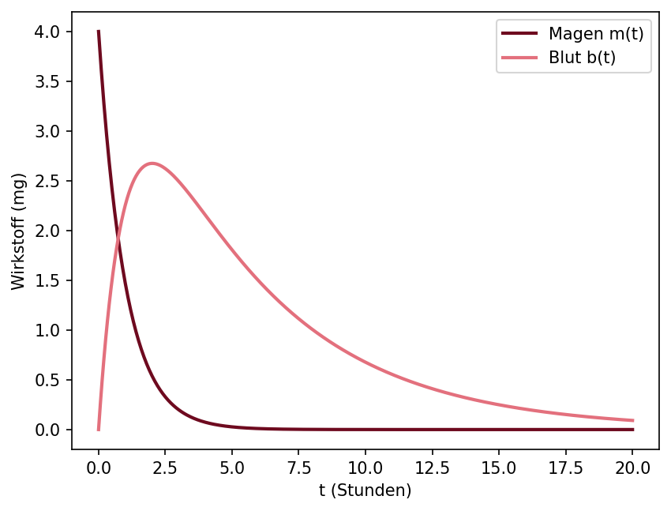
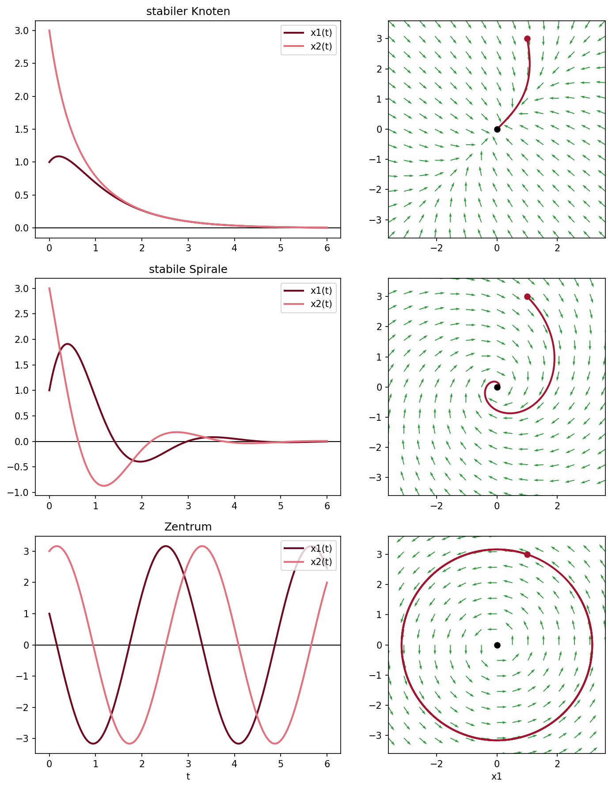
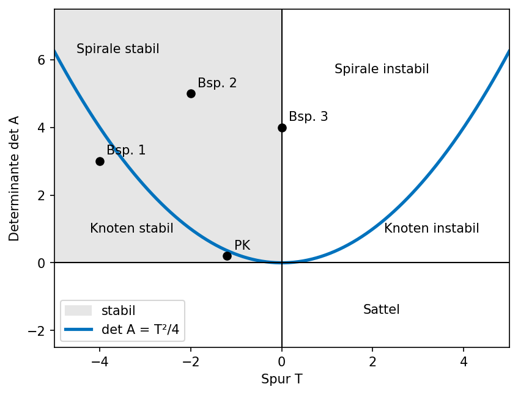
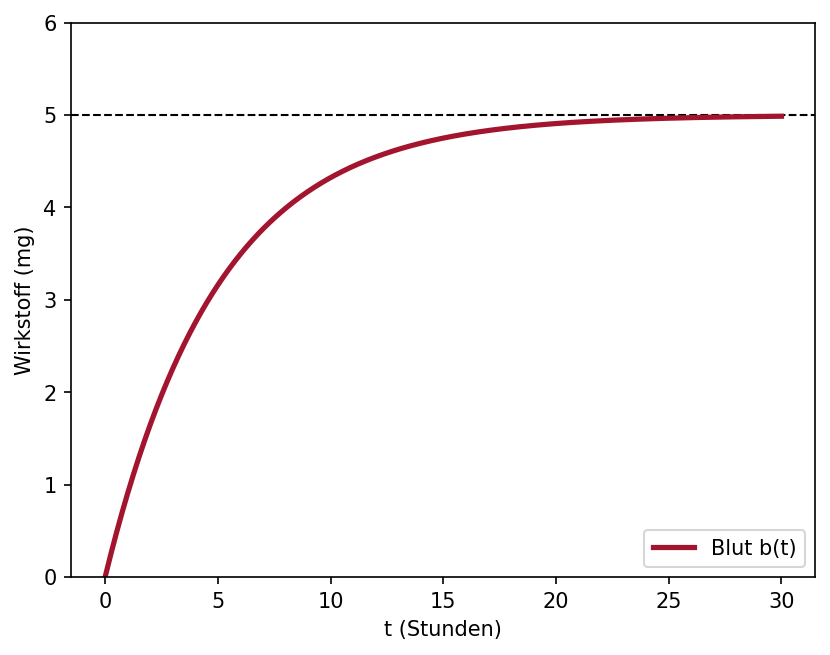

Kapitel 4 · Kontinuierliche dynamische Systeme mit mehreren Variablen
4.2Lineare Systeme
Für lineare Systeme dx/dt = A x liefern die Eigenwerte von A die Lösungen. Bei zwei Variablen entscheiden Spur und Determinante, ob der Ursprung ein Knoten, eine Spirale, ein Zentrum oder ein Sattel ist und ob er stabil ist. Ein Beispiel aus der Pharmakologie ist die Aufnahme eines Wirkstoffs aus dem Magen ins Blut.
Zu jeder Abbildung des Abschnitts finden Sie das Programm, das sie erzeugt. Ändern Sie Parameter und Startwerte und beobachten Sie, was passiert. Abbildungs- und Gleichungsnummern beziehen sich auf das Buch.
Abb. 4.9
Wirkstoff in Magen und Blut
dm/dt = −ka m, db/dt = ka m − ke b
Der Magen leert sich exponentiell, der Spiegel im Blut steigt an und fällt wieder ab. Das Maximum liegt bei t = ln(5)/0.8 ≈ 2 Stunden.

# Abb. 4.9: Wirkstoff in Magen und Blut (Buch, Abschnitt 4.2, Gl. 4.9)
# dm/dt = -ka m, db/dt = ka m - ke b mit ka = 1, ke = 0.2 pro Stunde, m(0) = 4, b(0) = 0: m(t) = 4 e^(-t), b(t) = 5 (e^(-0.2t) - e^(-t))
# (c) 2026 Philipp Kügler · Programm zum Buch „Dynamische Systeme in den Lebenswissenschaften“ · MIT-Lizenz (siehe LICENSE)
using Printf, Plots
using LinearAlgebra
R1 = RGB(0.43, 0.04, 0.12); R2 = RGB(0.64, 0.08, 0.18); R3 = RGB(0.89, 0.44, 0.49)
BL = RGB(0, 0.447, 0.741); HB = RGB(0.45, 0.70, 0.90); GR = RGB(0.2, 0.6, 0.25)
t = range(0, 20, length = 600)
m = 4 .* exp.(-t)
b = 5 .* (exp.(-0.2 .* t) .- exp.(-t))
tmax = log(5) / 0.8 # db/dt = 0: e^(-0.2t) = 5 e^(-t)
@printf("höchster Spiegel im Blut b = %.3f mg nach t = %.3f h\n", 5 * (exp(-0.2tmax) - exp(-tmax)), tmax)
A = [-1 0; 1 -0.2]
println("Eigenwerte von A: ", join([@sprintf("%g", l) for l in sort(real.(eigvals(A)))], " "))
p = plot(t, m, color = R1, lw = 2, label = "Magen m(t)", xlabel = "t (Stunden)", ylabel = "Wirkstoff (mg)")
plot!(p, t, b, color = R3, lw = 2, label = "Blut b(t)")
display(p)% Abb. 4.9: Wirkstoff in Magen und Blut (Buch, Abschnitt 4.2, Gl. 4.9)
% dm/dt = -ka m, db/dt = ka m - ke b mit ka = 1, ke = 0.2 pro Stunde, m(0) = 4, b(0) = 0: m(t) = 4 e^(-t), b(t) = 5 (e^(-0.2t) - e^(-t))
% (c) 2026 Philipp Kügler · Programm zum Buch „Dynamische Systeme in den Lebenswissenschaften“ · MIT-Lizenz (siehe LICENSE)
t = linspace(0, 20, 600);
m = 4 * exp(-t);
b = 5 * (exp(-0.2 * t) - exp(-t));
tmax = log(5) / 0.8; % db/dt = 0: e^(-0.2t) = 5 e^(-t)
fprintf('höchster Spiegel im Blut b = %.3f mg nach t = %.3f h\n', 5 * (exp(-0.2 * tmax) - exp(-tmax)), tmax);
A = [-1 0; 1 -0.2];
fprintf('Eigenwerte von A: %g %g\n', sort(eig(A)));
plot(t, m, 'Color', [0.43 0.04 0.12], 'LineWidth', 2); hold on
plot(t, b, 'Color', [0.89 0.44 0.49], 'LineWidth', 2); hold off
xlabel('t (Stunden)'); ylabel('Wirkstoff (mg)'); legend('Magen m(t)', 'Blut b(t)');# Abb. 4.9: Wirkstoff in Magen und Blut (Buch, Abschnitt 4.2, Gl. 4.9)
# dm/dt = -ka m, db/dt = ka m - ke b mit ka = 1, ke = 0.2 pro Stunde, m(0) = 4, b(0) = 0: m(t) = 4 e^(-t), b(t) = 5 (e^(-0.2t) - e^(-t))
# (c) 2026 Philipp Kügler · Programm zum Buch „Dynamische Systeme in den Lebenswissenschaften“ · MIT-Lizenz (siehe LICENSE)
import numpy as np
import matplotlib.pyplot as plt
t = np.linspace(0, 20, 600)
m = 4 * np.exp(-t)
b = 5 * (np.exp(-0.2 * t) - np.exp(-t))
tmax = np.log(5) / 0.8 # db/dt = 0: e^(-0.2t) = 5 e^(-t)
print(f"höchster Spiegel im Blut b = {5 * (np.exp(-0.2 * tmax) - np.exp(-tmax)):.3f} mg nach t = {tmax:.3f} h")
A = np.array([[-1, 0], [1, -0.2]])
print("Eigenwerte von A:", " ".join(f"{l:g}" for l in sorted(np.linalg.eigvals(A).real)))
plt.plot(t, m, color=(0.43, 0.04, 0.12), lw=2, label="Magen m(t)")
plt.plot(t, b, color=(0.89, 0.44, 0.49), lw=2, label="Blut b(t)")
plt.xlabel("t (Stunden)"); plt.ylabel("Wirkstoff (mg)"); plt.legend()
plt.show()# Abb. 4.9: Wirkstoff in Magen und Blut (Buch, Abschnitt 4.2, Gl. 4.9)
# dm/dt = -ka m, db/dt = ka m - ke b mit ka = 1, ke = 0.2 pro Stunde, m(0) = 4, b(0) = 0: m(t) = 4 e^(-t), b(t) = 5 (e^(-0.2t) - e^(-t))
# (c) 2026 Philipp Kügler · Programm zum Buch „Dynamische Systeme in den Lebenswissenschaften“ · MIT-Lizenz (siehe LICENSE)
t <- seq(0, 20, length.out = 600)
m <- 4 * exp(-t)
b <- 5 * (exp(-0.2 * t) - exp(-t))
tmax <- log(5) / 0.8 # db/dt = 0: e^(-0.2t) = 5 e^(-t)
cat(sprintf("höchster Spiegel im Blut b = %.3f mg nach t = %.3f h\n", 5 * (exp(-0.2 * tmax) - exp(-tmax)), tmax))
A <- matrix(c(-1, 0, 1, -0.2), nrow = 2, byrow = TRUE)
cat("Eigenwerte von A:", sprintf("%g", sort(eigen(A)$values)), "\n")
plot(t, m, type = "l", col = rgb(0.43, 0.04, 0.12), lwd = 2, xlab = "t (Stunden)", ylab = "Wirkstoff (mg)")
lines(t, b, col = rgb(0.89, 0.44, 0.49), lwd = 2)
legend("topright", legend = c("Magen m(t)", "Blut b(t)"), col = c(rgb(0.43, 0.04, 0.12), rgb(0.89, 0.44, 0.49)), lwd = 2)Ausgabe im Befehlsfenster
höchster Spiegel im Blut b = 2.675 mg nach t = 2.012 h
Eigenwerte von A: -1 -0.2Abb. 4.10
Knoten, Spirale und Zentrum
dx/dt = A x, x(0) = (1, 3)
Reelle negative Eigenwerte ergeben einen stabilen Knoten, komplexe mit negativem Realteil eine stabile Spirale, rein imaginäre ein Zentrum mit geschlossenen Bahnen.

# Abb. 4.10: drei lineare Systeme dx/dt = A x mit x(0) = (1, 3) (Buch, Abschnitt 4.2, Gl. 4.8 und 4.10)
# oben stabiler Knoten A = (-2 1; 1 -2), Mitte stabile Spirale A = (-1 2; -2 -1), unten Zentrum A = (0 -2; 2 0)
# links Zeitverläufe (Lösungsformeln), rechts Phasenebene mit Richtungsfeld
# (c) 2026 Philipp Kügler · Programm zum Buch „Dynamische Systeme in den Lebenswissenschaften“ · MIT-Lizenz (siehe LICENSE)
using Printf, Plots
using LinearAlgebra
R1 = RGB(0.43, 0.04, 0.12); R2 = RGB(0.64, 0.08, 0.18); R3 = RGB(0.89, 0.44, 0.49)
BL = RGB(0, 0.447, 0.741); HB = RGB(0.45, 0.70, 0.90); GR = RGB(0.2, 0.6, 0.25)
beispiele = [
("stabiler Knoten", [-2 1; 1 -2], t -> (2exp(-t) - exp(-3t), 2exp(-t) + exp(-3t))),
("stabile Spirale", [-1 2; -2 -1], t -> (exp(-t) * (cos(2t) + 3sin(2t)), exp(-t) * (3cos(2t) - sin(2t)))),
("Zentrum", [0 -2; 2 0], t -> (cos(2t) - 3sin(2t), 3cos(2t) + sin(2t))),
]
t = range(0, 6, length = 800)
G = range(-3.6, 3.6, length = 15)
bilder = []
for (name, A, loesung) in beispiele
lam = sort(complex.(eigvals(A)), by = l -> (imag(l), real(l)))
println(name, ": Eigenwerte ", join([@sprintf("%g%+gi", real(l), imag(l)) for l in lam], " "))
x1 = first.(loesung.(t)); x2 = last.(loesung.(t))
p1 = hline([0], color = :black, label = "", title = name, legend = :topright)
plot!(p1, t, x1, color = R1, lw = 2, label = "x1(t)"); plot!(p1, t, x2, color = R3, lw = 2, label = "x2(t)")
X = [g for g in G, h in G][:]; Y = [h for g in G, h in G][:]
U = A[1, 1] .* X .+ A[1, 2] .* Y; W = A[2, 1] .* X .+ A[2, 2] .* Y; L = hypot.(U, W) .+ 1e-12
p2 = quiver(X, Y, quiver = (0.33 .* U ./ L, 0.33 .* W ./ L), color = GR, legend = false,
xlims = (-3.6, 3.6), ylims = (-3.6, 3.6), aspect_ratio = :equal)
plot!(p2, x1, x2, color = R2, lw = 2); scatter!(p2, [1], [3], color = R2); scatter!(p2, [0], [0], color = :black)
push!(bilder, p1, p2)
end
xlabel!(bilder[5], "t"); xlabel!(bilder[6], "x1")
display(plot(bilder..., layout = (3, 2), size = (850, 1100)))% Abb. 4.10: drei lineare Systeme dx/dt = A x mit x(0) = (1, 3) (Buch, Abschnitt 4.2, Gl. 4.8 und 4.10)
% oben stabiler Knoten A = (-2 1; 1 -2), Mitte stabile Spirale A = (-1 2; -2 -1), unten Zentrum A = (0 -2; 2 0)
% links Zeitverläufe (Lösungsformeln), rechts Phasenebene mit Richtungsfeld
% (c) 2026 Philipp Kügler · Programm zum Buch „Dynamische Systeme in den Lebenswissenschaften“ · MIT-Lizenz (siehe LICENSE)
namen = {'stabiler Knoten', 'stabile Spirale', 'Zentrum'};
As = {[-2 1; 1 -2], [-1 2; -2 -1], [0 -2; 2 0]};
t = linspace(0, 6, 800);
X1 = {2 * exp(-t) - exp(-3 * t), exp(-t) .* (cos(2 * t) + 3 * sin(2 * t)), cos(2 * t) - 3 * sin(2 * t)}; % Lösungsformeln
X2 = {2 * exp(-t) + exp(-3 * t), exp(-t) .* (3 * cos(2 * t) - sin(2 * t)), 3 * cos(2 * t) + sin(2 * t)};
[G1, G2] = meshgrid(linspace(-3.6, 3.6, 15));
for z = 1:3
A = As{z};
lam = eig(A); lam = sortrows([imag(lam) real(lam)]); % nach Imaginär-, dann Realteil ordnen
fprintf('%s: Eigenwerte %s\n', namen{z}, sprintf('%g%+gi ', lam(:, [2 1])'));
subplot(3, 2, 2 * z - 1);
plot([0 6], [0 0], 'k'); hold on
plot(t, X1{z}, 'Color', [0.43 0.04 0.12], 'LineWidth', 2);
plot(t, X2{z}, 'Color', [0.89 0.44 0.49], 'LineWidth', 2); hold off
title(namen{z}); legend('', 'x1(t)', 'x2(t)');
subplot(3, 2, 2 * z);
U = A(1, 1) * G1 + A(1, 2) * G2; V = A(2, 1) * G1 + A(2, 2) * G2; L = sqrt(U.^2 + V.^2) + 1e-12;
quiver(G1, G2, U ./ L, V ./ L, 0.4, 'Color', [0.2 0.6 0.25]); hold on
plot(X1{z}, X2{z}, 'Color', [0.64 0.08 0.18], 'LineWidth', 2);
plot(1, 3, 'o', 'Color', [0.64 0.08 0.18], 'MarkerFaceColor', [0.64 0.08 0.18]); plot(0, 0, 'ko', 'MarkerFaceColor', 'k'); hold off
axis equal; xlim([-3.6 3.6]); ylim([-3.6 3.6]);
end
subplot(3, 2, 5); xlabel('t'); subplot(3, 2, 6); xlabel('x1');# Abb. 4.10: drei lineare Systeme dx/dt = A x mit x(0) = (1, 3) (Buch, Abschnitt 4.2, Gl. 4.8 und 4.10)
# oben stabiler Knoten A = (-2 1; 1 -2), Mitte stabile Spirale A = (-1 2; -2 -1), unten Zentrum A = (0 -2; 2 0)
# links Zeitverläufe (Lösungsformeln), rechts Phasenebene mit Richtungsfeld
# (c) 2026 Philipp Kügler · Programm zum Buch „Dynamische Systeme in den Lebenswissenschaften“ · MIT-Lizenz (siehe LICENSE)
import numpy as np
import matplotlib.pyplot as plt
beispiele = [
("stabiler Knoten", np.array([[-2, 1], [1, -2]]),
lambda t: (2 * np.exp(-t) - np.exp(-3 * t), 2 * np.exp(-t) + np.exp(-3 * t))),
("stabile Spirale", np.array([[-1, 2], [-2, -1]]),
lambda t: (np.exp(-t) * (np.cos(2 * t) + 3 * np.sin(2 * t)), np.exp(-t) * (3 * np.cos(2 * t) - np.sin(2 * t)))),
("Zentrum", np.array([[0, -2], [2, 0]]),
lambda t: (np.cos(2 * t) - 3 * np.sin(2 * t), 3 * np.cos(2 * t) + np.sin(2 * t))),
]
t = np.linspace(0, 6, 800)
G = np.linspace(-3.6, 3.6, 15); X1, X2 = np.meshgrid(G, G)
fig, axs = plt.subplots(3, 2, figsize=(10, 12))
for z, (name, A, loesung) in enumerate(beispiele):
lam = np.linalg.eigvals(A)
print(f"{name}: Eigenwerte", " ".join(f"{l.real:g}{l.imag:+g}i" for l in sorted(lam, key=lambda l: (l.imag, l.real))))
x1, x2 = loesung(t)
axs[z, 0].axhline(0, color="k", lw=1)
axs[z, 0].plot(t, x1, color=(0.43, 0.04, 0.12), lw=2, label="x1(t)")
axs[z, 0].plot(t, x2, color=(0.89, 0.44, 0.49), lw=2, label="x2(t)")
axs[z, 0].set_title(name); axs[z, 0].legend(loc="upper right")
U = A[0, 0] * X1 + A[0, 1] * X2; V = A[1, 0] * X1 + A[1, 1] * X2; L = np.hypot(U, V) + 1e-12
axs[z, 1].quiver(X1, X2, U / L, V / L, color=(0.2, 0.6, 0.25), angles="xy", scale=22, width=0.004)
axs[z, 1].plot(x1, x2, color=(0.64, 0.08, 0.18), lw=2); axs[z, 1].plot(1, 3, "o", color=(0.64, 0.08, 0.18)); axs[z, 1].plot(0, 0, "ko")
axs[z, 1].set_xlim(-3.6, 3.6); axs[z, 1].set_ylim(-3.6, 3.6); axs[z, 1].set_aspect("equal")
axs[2, 0].set_xlabel("t"); axs[2, 1].set_xlabel("x1")
plt.tight_layout()
plt.show()# Abb. 4.10: drei lineare Systeme dx/dt = A x mit x(0) = (1, 3) (Buch, Abschnitt 4.2, Gl. 4.8 und 4.10)
# oben stabiler Knoten A = (-2 1; 1 -2), Mitte stabile Spirale A = (-1 2; -2 -1), unten Zentrum A = (0 -2; 2 0)
# links Zeitverläufe (Lösungsformeln), rechts Phasenebene mit Richtungsfeld
# (c) 2026 Philipp Kügler · Programm zum Buch „Dynamische Systeme in den Lebenswissenschaften“ · MIT-Lizenz (siehe LICENSE)
namen <- c("stabiler Knoten", "stabile Spirale", "Zentrum")
As <- list(matrix(c(-2, 1, 1, -2), 2, byrow = TRUE), matrix(c(-1, 2, -2, -1), 2, byrow = TRUE), matrix(c(0, -2, 2, 0), 2, byrow = TRUE))
t <- seq(0, 6, length.out = 800)
X1 <- list(2 * exp(-t) - exp(-3 * t), exp(-t) * (cos(2 * t) + 3 * sin(2 * t)), cos(2 * t) - 3 * sin(2 * t)) # Lösungsformeln
X2 <- list(2 * exp(-t) + exp(-3 * t), exp(-t) * (3 * cos(2 * t) - sin(2 * t)), 3 * cos(2 * t) + sin(2 * t))
g <- expand.grid(x1 = seq(-3.6, 3.6, length.out = 15), x2 = seq(-3.6, 3.6, length.out = 15))
par(mfrow = c(3, 2), mar = c(4, 4, 2, 1))
for (z in 1:3) {
A <- As[[z]]
lam <- eigen(A)$values; lam <- lam[order(Im(lam), Re(lam))] # nach Imaginär-, dann Realteil ordnen
cat(namen[z], ": Eigenwerte ", paste(sprintf("%g%+gi", Re(lam), Im(lam)), collapse = " "), "\n", sep = "")
plot(t, X1[[z]], type = "l", col = rgb(0.43, 0.04, 0.12), lwd = 2, ylim = c(-3.5, 3.5), xlab = "t", ylab = "", main = namen[z])
lines(t, X2[[z]], col = rgb(0.89, 0.44, 0.49), lwd = 2); abline(h = 0)
legend("topright", legend = c("x1(t)", "x2(t)"), col = c(rgb(0.43, 0.04, 0.12), rgb(0.89, 0.44, 0.49)), lwd = 2, cex = 0.8)
U <- A[1, 1] * g$x1 + A[1, 2] * g$x2; V <- A[2, 1] * g$x1 + A[2, 2] * g$x2; L <- sqrt(U^2 + V^2) + 1e-12
plot(NULL, xlim = c(-3.6, 3.6), ylim = c(-3.6, 3.6), asp = 1, xlab = "x1", ylab = "x2")
arrows(g$x1, g$x2, g$x1 + 0.22 * U / L, g$x2 + 0.22 * V / L, length = 0.03, col = rgb(0.2, 0.6, 0.25))
lines(X1[[z]], X2[[z]], col = rgb(0.64, 0.08, 0.18), lwd = 2)
points(1, 3, pch = 16, col = rgb(0.64, 0.08, 0.18)); points(0, 0, pch = 16)
}Ausgabe im Befehlsfenster
stabiler Knoten: Eigenwerte -3+0i -1+0i
stabile Spirale: Eigenwerte -1-2i -1+2i
Zentrum: Eigenwerte 0-2i 0+2iAbb. 4.11
Spur-Determinanten-Ebene
T = a11 + a22, det A = a11 a22 − a12 a21
Die Parabel det A = T²/4 trennt Knoten von Spiralen. Stabil ist der Ursprung genau für T < 0 und det A > 0 (grau).

# Abb. 4.11: Spur-Determinanten-Ebene (Buch, Abschnitt 4.2)
# Die Spur T und die Determinante det A einer 2x2-Matrix entscheiden über Typ und Stabilität des Ursprungs; grau: stabil
# (c) 2026 Philipp Kügler · Programm zum Buch „Dynamische Systeme in den Lebenswissenschaften“ · MIT-Lizenz (siehe LICENSE)
using Printf, Plots
using LinearAlgebra
R1 = RGB(0.43, 0.04, 0.12); R2 = RGB(0.64, 0.08, 0.18); R3 = RGB(0.89, 0.44, 0.49)
BL = RGB(0, 0.447, 0.741); HB = RGB(0.45, 0.70, 0.90); GR = RGB(0.2, 0.6, 0.25)
matrizen = [("Bsp. 1", [-2 1; 1 -2]), ("Bsp. 2", [-1 2; -2 -1]), ("Bsp. 3", [0 -2; 2 0]), ("PK", [-1 0; 1 -0.2])]
T = range(-5, 5, length = 400)
p = plot(Shape([-5, 0, 0, -5], [0, 0, 7.5, 7.5]), color = :gray90, lw = 0, label = "stabil",
xlims = (-5, 5), ylims = (-2.5, 7.5), xlabel = "Spur T", ylabel = "Determinante det A", legend = :bottomleft)
plot!(p, T, T .^ 2 ./ 4, color = BL, lw = 2.5, label = "det A = T²/4")
hline!(p, [0], color = :black, label = ""); vline!(p, [0], color = :black, label = "")
for (name, A) in matrizen
Sp = tr(A); De = det(A)
typ = De < 0 ? "Sattel" : Sp == 0 ? "Zentrum" : Sp^2 >= 4De ? "Knoten" : "Spirale"
@printf("%s: Spur = %4.1f, det A = %4.1f -> %s%s\n", name, Sp, De, typ, Sp < 0 && De > 0 ? ", stabil" : "")
scatter!(p, [Sp], [De], color = :black, label = ""); annotate!(p, Sp + 0.15, De + 0.2, text(name, 9, :left, :bottom))
end
for (x, y, txt) in [(-3.3, 0.9, "Knoten stabil"), (-3.6, 6.2, "Spirale stabil"), (3.3, 0.9, "Knoten instabil"),
(2.2, 5.6, "Spirale instabil"), (2.2, -1.5, "Sattel")]
annotate!(p, x, y, text(txt, 9))
end
display(p)% Abb. 4.11: Spur-Determinanten-Ebene (Buch, Abschnitt 4.2)
% Die Spur T und die Determinante det A einer 2x2-Matrix entscheiden über Typ und Stabilität des Ursprungs; grau: stabil
% (c) 2026 Philipp Kügler · Programm zum Buch „Dynamische Systeme in den Lebenswissenschaften“ · MIT-Lizenz (siehe LICENSE)
namen = {'Bsp. 1', 'Bsp. 2', 'Bsp. 3', 'PK'};
As = {[-2 1; 1 -2], [-1 2; -2 -1], [0 -2; 2 0], [-1 0; 1 -0.2]};
T = linspace(-5, 5, 400);
fill([-5 0 0 -5], [0 0 7.5 7.5], [0.9 0.9 0.9], 'EdgeColor', 'none'); hold on
plot(T, T.^2 / 4, 'Color', [0 0.447 0.741], 'LineWidth', 2.5);
plot([-5 5], [0 0], 'k'); plot([0 0], [-2.5 7.5], 'k');
for i = 1:4
A = As{i}; Sp = trace(A); De = det(A);
if De < 0, typ = 'Sattel';
elseif Sp == 0, typ = 'Zentrum';
elseif Sp^2 >= 4 * De, typ = 'Knoten';
else, typ = 'Spirale';
end
if Sp < 0 && De > 0, typ = [typ ', stabil']; end
fprintf('%s: Spur = %4.1f, det A = %4.1f -> %s\n', namen{i}, Sp, De, typ);
plot(Sp, De, 'ko', 'MarkerFaceColor', 'k'); text(Sp + 0.15, De + 0.2, namen{i});
end
text(-3.3, 0.9, 'Knoten stabil', 'HorizontalAlignment', 'center'); text(-3.6, 6.2, 'Spirale stabil', 'HorizontalAlignment', 'center');
text(3.3, 0.9, 'Knoten instabil', 'HorizontalAlignment', 'center'); text(2.2, 5.6, 'Spirale instabil', 'HorizontalAlignment', 'center');
text(2.2, -1.5, 'Sattel', 'HorizontalAlignment', 'center'); hold off
xlim([-5 5]); ylim([-2.5 7.5]); xlabel('Spur T'); ylabel('Determinante det A');
legend('stabil', 'det A = T^2/4', 'Location', 'southwest');# Abb. 4.11: Spur-Determinanten-Ebene (Buch, Abschnitt 4.2)
# Die Spur T und die Determinante det A einer 2x2-Matrix entscheiden über Typ und Stabilität des Ursprungs; grau: stabil
# (c) 2026 Philipp Kügler · Programm zum Buch „Dynamische Systeme in den Lebenswissenschaften“ · MIT-Lizenz (siehe LICENSE)
import numpy as np
import matplotlib.pyplot as plt
matrizen = {"Bsp. 1": [[-2, 1], [1, -2]], "Bsp. 2": [[-1, 2], [-2, -1]], "Bsp. 3": [[0, -2], [2, 0]], "PK": [[-1, 0], [1, -0.2]]}
T = np.linspace(-5, 5, 400)
plt.fill_between([-5, 0], 0, 7.5, color="0.9", label="stabil")
plt.plot(T, T**2 / 4, color=(0, 0.447, 0.741), lw=2.5, label="det A = T²/4")
plt.axhline(0, color="k", lw=1); plt.axvline(0, color="k", lw=1)
for name, A in matrizen.items():
A = np.array(A); Sp, De = np.trace(A), np.linalg.det(A)
if De < 0: typ = "Sattel"
elif Sp == 0: typ = "Zentrum"
elif Sp**2 >= 4 * De: typ = "Knoten"
else: typ = "Spirale"
print(f"{name}: Spur = {Sp:4.1f}, det A = {De:4.1f} -> {typ}" + (", stabil" if Sp < 0 and De > 0 else ""))
plt.plot(Sp, De, "ko"); plt.text(Sp + 0.15, De + 0.2, name)
for x, y, txt in [(-3.3, 0.9, "Knoten stabil"), (-3.6, 6.2, "Spirale stabil"), (3.3, 0.9, "Knoten instabil"),
(2.2, 5.6, "Spirale instabil"), (2.2, -1.5, "Sattel")]:
plt.text(x, y, txt, ha="center")
plt.xlim(-5, 5); plt.ylim(-2.5, 7.5); plt.xlabel("Spur T"); plt.ylabel("Determinante det A"); plt.legend(loc="lower left")
plt.show()# Abb. 4.11: Spur-Determinanten-Ebene (Buch, Abschnitt 4.2)
# Die Spur T und die Determinante det A einer 2x2-Matrix entscheiden über Typ und Stabilität des Ursprungs; grau: stabil
# (c) 2026 Philipp Kügler · Programm zum Buch „Dynamische Systeme in den Lebenswissenschaften“ · MIT-Lizenz (siehe LICENSE)
namen <- c("Bsp. 1", "Bsp. 2", "Bsp. 3", "PK")
As <- list(matrix(c(-2, 1, 1, -2), 2, byrow = TRUE), matrix(c(-1, 2, -2, -1), 2, byrow = TRUE),
matrix(c(0, -2, 2, 0), 2, byrow = TRUE), matrix(c(-1, 0, 1, -0.2), 2, byrow = TRUE))
T <- seq(-5, 5, length.out = 400)
plot(NULL, xlim = c(-5, 5), ylim = c(-2.5, 7.5), xlab = "Spur T", ylab = "Determinante det A")
rect(-5, 0, 0, 7.5, col = "grey90", border = NA)
lines(T, T^2 / 4, col = rgb(0, 0.447, 0.741), lwd = 2.5); abline(h = 0, v = 0)
for (i in 1:4) {
A <- As[[i]]; Sp <- sum(diag(A)); De <- det(A)
typ <- if (De < 0) "Sattel" else if (Sp == 0) "Zentrum" else if (Sp^2 >= 4 * De) "Knoten" else "Spirale"
if (Sp < 0 && De > 0) typ <- paste0(typ, ", stabil")
cat(sprintf("%s: Spur = %4.1f, det A = %4.1f -> %s\n", namen[i], Sp, De, typ))
points(Sp, De, pch = 16); text(Sp + 0.15, De + 0.2, namen[i], adj = 0)
}
text(c(-3.3, -3.6, 3.3, 2.2, 2.2), c(0.9, 6.2, 0.9, 5.6, -1.5), c("Knoten stabil", "Spirale stabil", "Knoten instabil", "Spirale instabil", "Sattel"))
legend("bottomleft", legend = c("stabil", "det A = T^2/4"), fill = c("grey90", NA), border = NA, col = c(NA, rgb(0, 0.447, 0.741)), lwd = c(NA, 2.5))Ausgabe im Befehlsfenster
Bsp. 1: Spur = -4.0, det A = 3.0 -> Knoten, stabil
Bsp. 2: Spur = -2.0, det A = 5.0 -> Spirale, stabil
Bsp. 3: Spur = 0.0, det A = 4.0 -> Zentrum
PK: Spur = -1.2, det A = 0.2 -> Knoten, stabilAbb. 4.12
Dauerinfusion
db/dt = ka m − ke b + u, b* = u/ke
Mit einer konstanten Infusion stellt sich unabhängig vom Anfangswert der Spiegel b* = 5u ein.

# Abb. 4.12: Dauerinfusion (Buch, Abschnitt 4.2, Gl. 4.11)
# dm/dt = -ka m, db/dt = ka m - ke b + u mit u = 1 mg pro Stunde, m(0) = b(0) = 0: b(t) = (u/ke)(1 - e^(-ke t)), b* = u/ke = 5
# (c) 2026 Philipp Kügler · Programm zum Buch „Dynamische Systeme in den Lebenswissenschaften“ · MIT-Lizenz (siehe LICENSE)
using Printf, Plots
R1 = RGB(0.43, 0.04, 0.12); R2 = RGB(0.64, 0.08, 0.18); R3 = RGB(0.89, 0.44, 0.49)
BL = RGB(0, 0.447, 0.741); HB = RGB(0.45, 0.70, 0.90); GR = RGB(0.2, 0.6, 0.25)
ke = 0.2; u = 1
t = range(0, 30, length = 600)
b = u / ke .* (1 .- exp.(-ke .* t))
for tt in (5, 10, 20, 30)
@printf("t = %2d h: b = %.3f mg\n", tt, u / ke * (1 - exp(-ke * tt)))
end
p = hline([u / ke], color = :black, ls = :dash, label = "", ylims = (0, 6), legend = :bottomright, xlabel = "t (Stunden)", ylabel = "Wirkstoff (mg)")
plot!(p, t, b, color = R2, lw = 2.5, label = "Blut b(t)")
display(p)% Abb. 4.12: Dauerinfusion (Buch, Abschnitt 4.2, Gl. 4.11)
% dm/dt = -ka m, db/dt = ka m - ke b + u mit u = 1 mg pro Stunde, m(0) = b(0) = 0: b(t) = (u/ke)(1 - e^(-ke t)), b* = u/ke = 5
% (c) 2026 Philipp Kügler · Programm zum Buch „Dynamische Systeme in den Lebenswissenschaften“ · MIT-Lizenz (siehe LICENSE)
ke = 0.2; u = 1;
t = linspace(0, 30, 600);
b = u / ke * (1 - exp(-ke * t));
for tt = [5 10 20 30]
fprintf('t = %2d h: b = %.3f mg\n', tt, u / ke * (1 - exp(-ke * tt)));
end
plot([0 30], [u / ke u / ke], 'k--'); hold on
plot(t, b, 'Color', [0.64 0.08 0.18], 'LineWidth', 2.5); hold off
xlabel('t (Stunden)'); ylabel('Wirkstoff (mg)'); ylim([0 6]); legend('b* = u/k_e', 'Blut b(t)', 'Location', 'southeast');# Abb. 4.12: Dauerinfusion (Buch, Abschnitt 4.2, Gl. 4.11)
# dm/dt = -ka m, db/dt = ka m - ke b + u mit u = 1 mg pro Stunde, m(0) = b(0) = 0: b(t) = (u/ke)(1 - e^(-ke t)), b* = u/ke = 5
# (c) 2026 Philipp Kügler · Programm zum Buch „Dynamische Systeme in den Lebenswissenschaften“ · MIT-Lizenz (siehe LICENSE)
import numpy as np
import matplotlib.pyplot as plt
ke, u = 0.2, 1
t = np.linspace(0, 30, 600)
b = u / ke * (1 - np.exp(-ke * t))
for tt in [5, 10, 20, 30]:
print(f"t = {tt:2d} h: b = {u / ke * (1 - np.exp(-ke * tt)):.3f} mg")
plt.axhline(u / ke, color="k", ls="--", lw=1)
plt.plot(t, b, color=(0.64, 0.08, 0.18), lw=2.5, label="Blut b(t)")
plt.xlabel("t (Stunden)"); plt.ylabel("Wirkstoff (mg)"); plt.ylim(0, 6); plt.legend(loc="lower right")
plt.show()# Abb. 4.12: Dauerinfusion (Buch, Abschnitt 4.2, Gl. 4.11)
# dm/dt = -ka m, db/dt = ka m - ke b + u mit u = 1 mg pro Stunde, m(0) = b(0) = 0: b(t) = (u/ke)(1 - e^(-ke t)), b* = u/ke = 5
# (c) 2026 Philipp Kügler · Programm zum Buch „Dynamische Systeme in den Lebenswissenschaften“ · MIT-Lizenz (siehe LICENSE)
ke <- 0.2; u <- 1
t <- seq(0, 30, length.out = 600)
b <- u / ke * (1 - exp(-ke * t))
for (tt in c(5, 10, 20, 30)) cat(sprintf("t = %2d h: b = %.3f mg\n", tt, u / ke * (1 - exp(-ke * tt))))
plot(t, b, type = "l", col = rgb(0.64, 0.08, 0.18), lwd = 2.5, ylim = c(0, 6), xlab = "t (Stunden)", ylab = "Wirkstoff (mg)")
abline(h = u / ke, lty = 2)
legend("bottomright", legend = c("b* = u/k_e", "Blut b(t)"), col = c("black", rgb(0.64, 0.08, 0.18)), lty = c(2, 1), lwd = c(1, 2.5))Ausgabe im Befehlsfenster
t = 5 h: b = 3.161 mg
t = 10 h: b = 4.323 mg
t = 20 h: b = 4.908 mg
t = 30 h: b = 4.988 mgIm Browser ausprobieren · ohne Installation
Lineare Systeme in der Ebene
Wählen Sie die Einträge der Matrix A. Spur und Determinante entscheiden, ob der Ursprung ein Knoten, eine Spirale, ein Zentrum oder ein Sattel ist und ob er stabil ist.
MATLAB-Apps aus der Vorlesung
Herunterladen, in einen Ordner legen und in MATLAB den Namen ohne Endung eingeben, z. B. alcohol_app. Die Apps nutzen die grafische Oberfläche von MATLAB und laufen nicht in GNU Octave.
- alcohol_app.mPharmakokinetik von Alkohol nach Pieters et al. (1990)